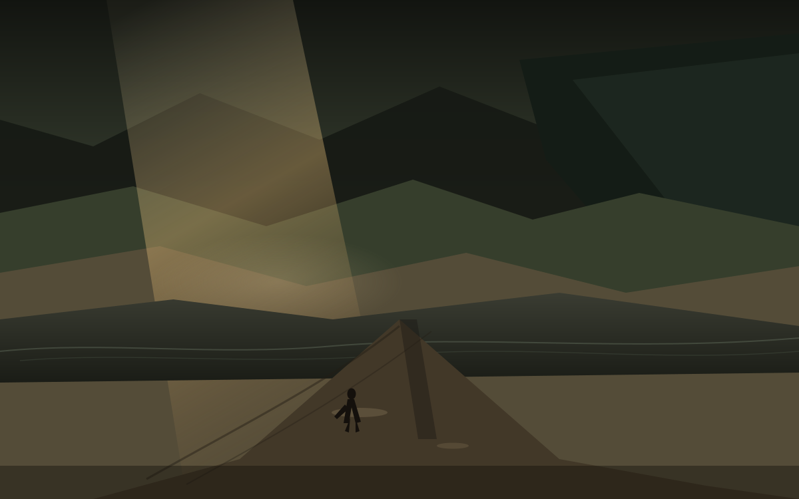

岸
夜里十点十七
今天是星期六，日历上写着 10 月 10 日。昨天潮还在海湾那边涨，今天水已经到了岸。国务院办公厅那张表没改：1 日到 7 日放假调休，9 月 20 日和 10 月 10 日周六上班。所以这一周只剩今天还要再坐一次班。岸不是诗。岸是水退之后露出的那一截，和账户里价暂时停在的那一格，同一天撞上西安的阴夜。
这篇落笔是夜里 22 点 17。对美东是上午 10 点 17，现金盘已收。能写进余温的，只有已经收过的数，和已经写成稿的方向。孩子一岁多，他不认星期六，只认楼道灯什么时候亮。散打馆开着，啤酒吧和游戏机仍停在计划里，没有地址，没有开业日，不提前写成店。
西安今晚两套预报大体对齐，这在最近几天里算少见。一套写今天多云转阴，高 25、低 16。另一套写关中、陕南晴转阴，局地有分散小雨。明天雨水发展，最高可能掉到 19 到 21。白天热、夜里凉，城墙根的风还是西边来的。今晚先不把雨写成已经落到窗上。
水先到岸
国家飓风中心说，伊萨亚斯昨夜在佛罗里达 Destin 附近登陆，当时是二级飓风，持续风约 105 英里。今天早上已降为后热带气旋，在阿拉巴马南部上空继续减弱，最大持续风降到 35 到 65 英里之间，正向北移，预计周日消散。佛罗里达和阿拉巴马有数十万人断电，闪洪和风暴潮的威胁还在。潮是昨天的字，岸是今天的字。水被推上岸之后，人开始算断电和树倒。
油的那一头也动了。特朗普披露与普京的通话，美方临时放松对俄柴油的制裁，允许向全球市场供应。俄罗斯将立即供应超过 30 万吨，11 月再加 50 万吨，之后再加 100 万吨。国际油价短线跳水，布伦特和美油都跌过一美元。海峡仍悬着，但柴油这一截先被放出来。水在岸上，油在管道里。两件事不合成一句「价必跌」，只记下它们同一天都在。
巴拿马那边，7.7 级地震在 Herrera 省，首都有明显震感，至少 27 人受伤，建筑物和道路有损。中资机构和华侨华人暂无伤亡报告。地震不是潮，但地面裂开的那一截，也是岸的一种。余温不替任何一方收口。
奥斯陆与台北
诺贝尔和平奖给了 85 岁的纳维·皮莱。挪威委员会赞扬她在国际法领域的努力。她曾任联合国人权事务高级专员和国际刑事法院法官。以色列方面表示谴责。奖给了法，而不是给了某一方的胜利。奥斯陆把奖放在那里，不替战场上的人决定谁是岸。
台北今天是双十。赖清德发表讲话，引用圣经要建「山巅之城」，说台湾强化防卫不是放弃对话，武力不能凌驾规则。大陆国台办发言人张晗批有关讲话罔顾事实、颠倒是非，误导民众。两岸的岸还在各自的那一侧。话多，水没退。余温只记下日期和口径。
乌克兰那边，俄军袭击仍在继续，扎波罗热等地有伤亡。特朗普的柴油安排被泽连斯基方面称为「软弱」。迈阿密还有美乌会晤的消息。前线僵持超过四年半，岸没有因为一笔柴油就移动。
西安的岸
城墙根的风还是西边来的。今天高约 25，低约 16，多云转阴。明天雨来，最高可能掉到 20 以下。孩子一岁多，他不看预报，只看楼道灯。散打馆开着，有人在垫子上出拳。啤酒吧和游戏机仍停在计划里，没有招牌，没有开业日。岸是水退之后露出的那一截，也是计划还没落地的那一截。
农场账仍停在九月初的冬。水塔和金像还在，种子还在地里。闫小华的市集没有新的报数。不把未验证的收获写成已经完成。冬还在，岸也还在。
仓的岸是周五收盘。AVGO 收在 361.54，相对成本 419.78，浮亏约 13.9%。80 股，成本大约 3.36 万。昨天潮的时候锚是周四 360.14，今天岸上是 361.54。价在岸边停了一下，没有回到成本之上。决定之后的第二十四天，潮之后的第一道岸。
留下
体积光从左上破口斜下来，脏金打在湿岸上。远山贴着退去的水线，路从画面下缘伸向中间。小人物穿着长外套，站在路的尽头，面朝岸，不是回城门。水在他身后的那一侧，城在他前面的那一侧。余温把这一截留下来，不替他决定下一步。
明天雨来，西安的窗会湿。海湾那边的断电还在恢复。柴油在管道里走。岸还在。把今天留下来，不是因为岸稳，是因为水已经到过。